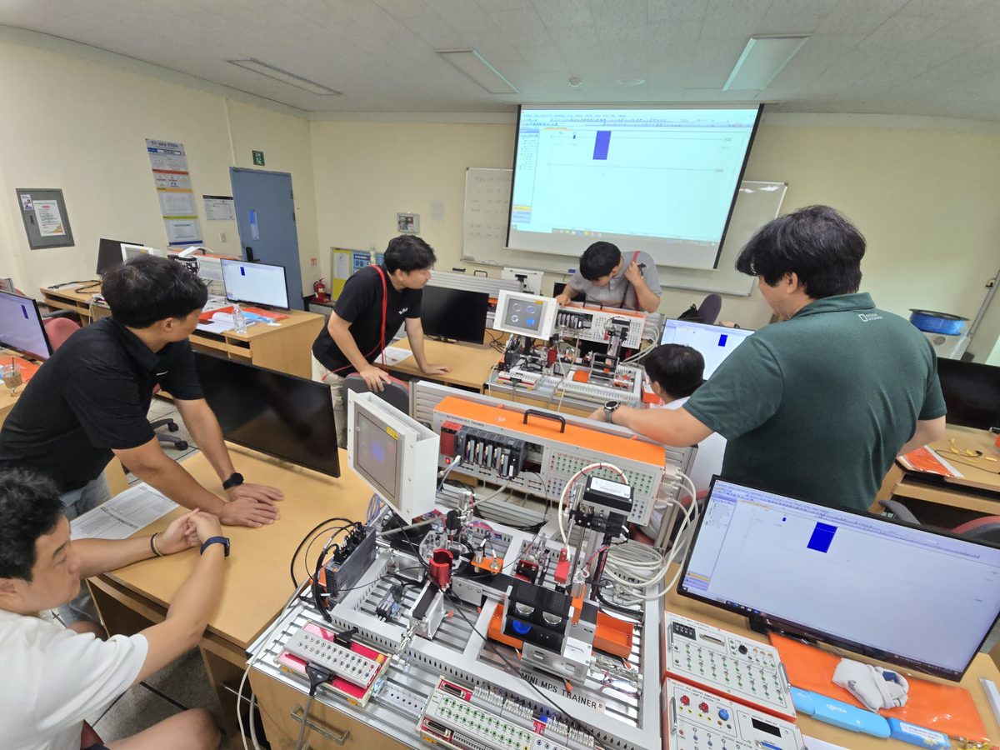
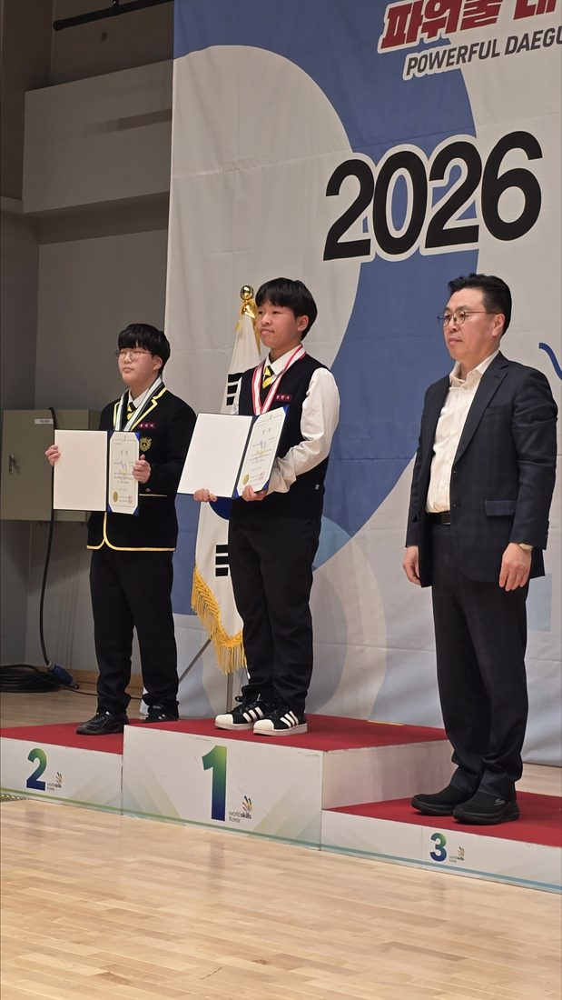

육군 부사관
K-방산 군 특성화 · 육군 기술 부사관 55세 정년보장
스마트 팩토리 / AI 제조 기술분야를 다루는 융합형 엔지니어 육성. 대학 진학·첨단산업 취업·군특성화까지 다양한 진로를 준비하는 스마트기술과입니다.
PPT의 핵심 강점을 그대로 살리고 AI·로봇·대학 진학으로 가능성을 넓힙니다.
K-방산 군 특성화 · 육군 기술 부사관 55세 정년보장
과정평가형 국가기술자격 자동화설비산업기사 취득지원
반도체 관련 대기업·중견기업 취업
선취업 후진학 제도 연계 지원 · 관련 대학 전공으로 진로 확장
첨부 학과 홍보 PPT 3~4쪽에 제시된 내용을 그대로 반영했습니다.
PPT 2쪽의 학과목표와 교육과정을 그대로 소개합니다.

스마트공장 일반 · 기계기초공작
스마트설비실무 · 기계소프트웨어개발 · 기계제어설계 · 컴퓨터활용생산
노동 인권과 산업 안전 보건
첨단 장비를 직접 다루며 문제를 해결하는 현장 실무형 기술인 양성을 목표로 합니다.
기계의 기초를 익히고 설계·제어·제조 분야로 시야를 넓힙니다. 아래는 관련 학습 분야를 소개하는 내용입니다.
도면을 읽고, 부품의 형상과 치수를 이해하며 설계의 기본을 익히는 분야
도면 해독 · 치수 · 설계 기초센서와 구동장치의 작동을 이해하고 자동화 설비의 제어 원리를 탐색하는 분야
센서 · 제어 · 자동화기계 가공과 생산 공정의 흐름을 익혀 스마트 제조 기술을 이해하는 분야
기계 가공 · 공정 · 품질반도체 생산 과정과 장비·품질 직무를 살펴보고 취업 분야를 탐색하는 영역
제조 공정 · 장비 · 진로※ 이미지와 아이콘은 학습 분야 설명을 위한 도식입니다. 장비 도입 현황과 실제 개설 수업은 학교 안내를 기준으로 확인해 주세요.
스마트 팩토리·기계제어를 넘어 만나게 될 AI 로봇 산업의 변화
AI가 센서로 주변을 인식하고 로봇의 움직임을 제어하는 기술입니다. 기계 구조·제어·소프트웨어 기초가 이런 산업을 이해하는 출발점이 됩니다.
제조 현장에서 활용할 산업용 휴머노이드 로봇 개발 사례입니다. 현대차그룹은 2028년부터 미국 공장 도입을 목표로 설명하고 있습니다.
공식 자료 보기 ↗다양한 작업을 목표로 연구·개발하는 범용 휴머노이드 로봇 사례입니다. 다양한 환경의 작업을 수행하도록 개발 중인 휴머노이드 로봇입니다.
공식 자료 보기 ↗※ Atlas·Optimus는 미래 산업 사례로 소개한 외부 기업의 로봇입니다.
PPT에 제시된 주요 진로를 중심으로 정리한 세 갈래 로드맵
대학 진학 지원 (복무 중·전역 후 학위 취득 가능, 등록금 지원 연계). 선취업 후진학 제도 연계 지원.
반도체 관련 대기업·중견기업 취업. 자동화 공정 및 장비 이해, 반도체 제조·품질 기술 역량 강화.
100% K-방산 군 특성화 (육군 기술 부사관 55세 정년보장). 전역 후 군무원 전환 무시험.
기초 학습부터 진로 탐색까지, 방향에 따라 집중해 볼 내용을 안내합니다.
CAD·PLC·기계 가공 등 기초 역량을 익히고 관련 자격 및 진로를 탐색합니다.
기계·제어 기반을 바탕으로 반도체 설비와 생산·품질 직무를 탐색합니다.
기계·정비 기초와 군특성화 프로그램을 바탕으로 군 관련 진로를 알아봅니다.
전공 기초를 쌓으며 관련 학과와 진학 전형을 살펴봅니다.
※ 위 로드맵은 진로 이해를 돕는 예시입니다. 선발·자격증 취득·취업·전환은 각 제도와 개인별 요건에 따라 달라집니다.

최근 5년간 기능경기대회 입상 실적(배관 직종). 대구·전국 기능경기대회 금·은·동메달 및 국가대표 선발 및 특별채용 관련 자료를 확인할 수 있습니다.
자료: 조일고등학교 스마트기술과 홍보 PPT문구와 수치, 이미지까지 그대로 확인할 수 있습니다. 각 자료를 누르면 크게 열립니다.
기존 활동을 담은 홍보영상입니다.
미래기술 소개와 현재 활동 자료를 구분해 확인해 주세요.
※ 과거 활동 영상에 학과 개편 전 ‘항공기계과’ 명칭이 등장할 수 있습니다. 현재 학과 홍보명은 ‘스마트기술과’입니다.
군특성화 활동부터 전공실습과 학교생활까지
사진으로 살펴보는 우리의 순간들
스마트제조와 기계·제어 기술의 기초를 바탕으로 미래를 설계하는 학과입니다. 관련 대학 진학, 첨단산업 취업, 군특성화 진로를 함께 탐색할 수 있습니다. 지원 자격과 전형 일정은 학교의 해당 학년도 공식 모집요강을 확인해 주세요.
궁금한 점은 학과로 문의해 주세요.
학과 선택을 고민하는 학생과 학부모를 위한 간단한 안내입니다.
군특성화뿐 아니라 자동화 설비, 반도체·첨단산업, 대학 진학 등 다양한 진로를 함께 소개하고 있습니다. 실제 과정 선택과 지원 조건은 학교에 문의해 주세요.
기계기초공작, 스마트공장 일반, 스마트설비 실무, 기계제어설계, 컴퓨터활용생산 등 학과에서 소개한 전공 분야를 학습합니다. 학년도별 교육과정은 학교 안내를 확인해 주세요.
과정평가형 자동화설비산업기사 취득지원 내용을 안내하고 있습니다. 실제 자격 취득은 해당 과정의 이수 및 평가 기준을 충족해야 합니다.
CAD, PLC, CNC 등 관련 기술을 소개하고 있습니다. 재구조화에 따른 신규 장비의 도입 시점과 실제 사용 가능 여부는 학과에 확인해 주세요.
전형 방법과 지원 자격, 제출 서류는 모집 학년도에 따라 달라질 수 있습니다. 반드시 해당 학년도 조일고등학교 공식 모집요강을 확인해 주세요.
스마트기술과 문의 전화 053-235-9095로 연락해 주세요. 상담 가능 시간은 학교 운영 일정에 따릅니다.